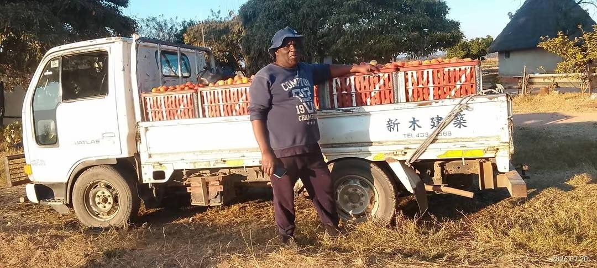

Your partner for sustainable agriculture
We connect agronomic knowledge with field-level implementation — solutions suited to each client’s budget, environment, resources and production goals.
Practical farming support that puts farmers first.
BennieAgro Farming Solutions is an agriculture-focused consultancy and practical farming support business committed to helping farmers, communities and agricultural enterprises improve productivity, profitability and resilience.
Working across crop and animal production, farm advisory, irrigation, agricultural inputs and capacity building, BennieAgro promotes farming systems that protect natural resources while supporting food security, livelihoods and long-term business growth. Our approach places farmers and communities at the centre of learning and decision-making.
Our mission
To deliver practical, accessible and responsible agricultural solutions that build farmer skills, strengthen rural livelihoods and support productive, climate-resilient farming systems.
Our vision
To contribute to a future where farmers and communities have the knowledge, tools and confidence to produce food sustainably, adapt to changing climates and create lasting agricultural opportunities.
What guides our work
Practicality
Recommendations that can be implemented under real farm conditions.
Sustainability
Protecting soil, water, biodiversity and the productive capacity of land.
Community partnership
Learning with farmers and building local capacity.
Integrity & accountability
Clear advice, professional service and responsible input use.
Continuous learning
Observation, field trials, monitoring and improvement.
From smallholders to development partners
- 👨🏾🌾Smallholder, emerging and commercial farmers
- 🤝Farmer groups, cooperatives and community irrigation schemes
- 🏢Agricultural businesses, input suppliers and farm enterprises
- 🎓Schools, training institutions and community programmes
- 🌍Development partners supporting food security and rural livelihoods
🗺️ Geographic focus
Our contact network and service activity connect Namibia and Zimbabwe. Specific projects, schedules and service areas are agreed with each client or partner.
🤝 Partnerships
We welcome collaboration with farmer organisations, community leaders, agricultural institutions, suppliers and development partners.
💚 Our commitment
Practical agronomy, responsible resource use and community empowerment — helping farmers move from advice to action.
Ready to grow?
Book a farm visit, request a quote or chat to us on WhatsApp.